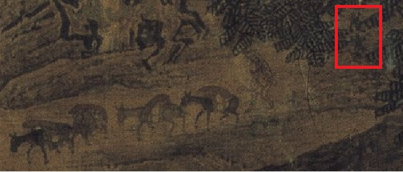

第 9 章
宋画的笔触
陆瑶在白板上写完最后一个字，退后两步。粉笔灰落在她袖口上，她没有拍。白板上那行字墨迹未干——“在这块画布上，找到宋画”——下面压着三张用磁铁固定的参考图：一张李成《晴峦萧寺图》的局部打印件，一张范宽《溪山行旅图》的山石特写，还有一张是从某部武侠网游里截下来的场景截图。第三张图的饱和度被刻意调高了，山体泛着一种塑料质感的翠绿色，瀑布像一条发光的荧光棒。那截图是陆瑶自己从竞品里抓的。她把它贴在白板上，不是为了参考，是为了标记一个坐标——一个她们必须远离的方向。
时间是2021年3月。沈明远刚刚在引擎选型上从陈言那里争取到了渲染管线的自研权，林铮还在跟移动端的帧率死磕，美术预研就已经悄无声息地开始了。这个项目的缘起，可以追溯到更早的2019年11月，当Everstone工作室在杭州启动这个名为《燕云十六声》的雄心计划时，其目标便是打造一款能让玩家深度沉浸于武侠世界的角色扮演游戏。
陆瑶从广州网易互娱的美术中台调过来的时候，简历上写着参与过两款MMO的场景设计，但她真正想让沈明远点头的，是一份她在面试时带来的个人作品集——里面全是她用业余时间临摹的宋画山水，绢本扫描件和数字复刻并排放在一起，每一张的角落都标注了原画尺寸、收藏机构和笔触分析。沈明远翻完那本作品集，问了她一个问题：这种质感能不能跑在移动端上。陆瑶当时的回答是，她不知道，但如果让她试，她可以告诉他边界在哪里。
三个月后，边界开始显现。美术预研的第一阶段，陆瑶把团队拆成三个小组，每组负责一个风格方向。这不是她独创的方法——网易内部在启动新项目时，通常会要求美术团队在八到十二周内产出多个风格样本，然后由制作人和艺术总监共同裁定方向。但陆瑶把流程改了。她要求三个小组同时做同一段场景：燕山山脉中的一段峡谷，包含一组山石、一条溪流、三棵松树和一座废弃的烽火台。场景规格完全一致，机位固定，光照条件统一设定为秋季午后。唯一的变量是风格。第一组走写实历史风。
组长是刚从育碧上海跳过来的场景美术赵启明，他参与过《刺客信条》系列的场景制作，对历史建筑的还原有一套成熟的方法论。他带着组员翻了三周的宋辽边境考古报告，从烽火台的夯土分层到山体岩石的沉积纹理，全部按照真实地质资料建模。材质贴图用了8K分辨率的扫描件，松树的树皮质感精确到每平方厘米的裂纹密度。
第二组走水墨写意风。组长是陆瑶自己带出来的场景原画师方晓，他在加入网易之前做过两年独立动画，对水墨渲染有执念。这组的思路是放弃物理真实感，转而追求笔触的表现力。山石用大面积的黑白灰块面构成，松树以线条勾勒为主，溪流完全用留白处理。整个场景看起来像一幅动态的水墨卷轴。
第三组走泛二次元风。组长是美术团队里最年轻的成员，二十三岁的角色原画师陈子涵。她的理由很直接：市场数据摆在那里，过去三年国内收入前十的手游里，有六款采用了泛二次元美术风格。她认为《燕云十六声》如果要在移动端打开局面，视觉语言必须向年轻用户靠拢。
这组的场景成品色彩明快，山石造型偏几何化，松树的枝叶被简化成色块层次，烽火台加上了发光的符文装饰——陈子涵把这称为历史元素的风格化转译。
六周之后，三组场景同时在引擎中跑了起来。陆瑶没有让团队内部先看。她直接约了沈明远、林铮和项目组所有核心成员，在Everstone工作室那间没有窗户的评审室里做了一次匿名展示。三组场景的播放顺序随机打乱，画面上不标注风格名称和制作人员，只编号为A、B、C。
沈明远第一个开口。他在A组场景前站了大概两分钟，然后说了一句话：像旅游宣传片。他说这话的时候语气很平，不像批评，更像陈述一个事实。
A组是写实历史风。赵启明坐在评审室最后一排，手里的笔停住了。沈明远接着说了第二句：技术上很扎实，但玩家看到这个画面，不会觉得自己在玩一个关于燕云十六州的游戏，他们会觉得自己在看一部BBC纪录片。林铮从技术角度补了一刀。
他放大了A组场景中烽火台的材质细节，指着屏幕上的数字说，单这一个资产的贴图分辨率就占了将近四百兆显存，如果整个燕山山脉都按这个标准做，移动端根本跑不动，这不是美术问题，是物理问题。评审室安静了几秒。投影仪的风扇声突然变得很明显。
然后是B组。水墨写意风的场景一出现，在场的人明显有了反应——不是赞同，是一种不确定的沉默。画面确实有辨识度，灰白的山石和墨色的松树在屏幕上构成了一种强烈的形式感，溪流的留白处理甚至让整个场景有了一种呼吸感。
但当林铮把镜头从固定机位切换到自由视角时，问题暴露了。水墨风格的场景在平面构图上很强，一旦进入三维空间，笔触的表现力就失去了支撑。山石的侧面和背面缺乏足够的视觉信息，松树从不同角度看过去，线条的粗细和浓淡无法保持一致。更致命的是空间深度——当镜头在峡谷中推进时，前景和远景之间的层次感几乎消失了，整个画面变成了一片灰蒙蒙的平面。陆瑶自己站起来走到屏幕前，用手指沿着画面中的山脊线划了一下。
然后C组出现了。泛二次元风格的燕山峡谷一亮相，评审室里的气氛就变了。不是变好，是变紧。陈子涵的场景色彩明快，造型讨喜，在移动端低配模式下帧率跑到了四十七帧——比另外两组都高。
但画面上那些发光的符文装饰和几何化的山石造型，让整个场景看起来更像一个仙侠题材的手游，而不是五代十国的燕山。沈明远没有说话。林铮也没有说话。
打破沉默的是坐在评审室左侧的一个瘦高男人。他叫贺知章，是项目组聘请的历史顾问之一，本职是浙江大学历史系的副教授，专攻五代宋元史。贺知章平时在项目会议上很少主动发言，大多数时候只是安静地做笔记，偶尔在涉及具体史实问题时才会开口纠正。但这一次，他站起来了。
他指着屏幕上发光的符文，问陈子涵这是什么。陈子涵解释说这是历史元素的风格化转译，目的是让年轻玩家更容易接受。贺知章摘下眼镜擦了擦，重新戴上，然后说这是胡闹。
评审室里没有人笑。贺知章的语气不像愤怒，更像一种学者在面对史料被篡改时本能的生理反应。他走到屏幕前，指着那座加了发光符文的烽火台说，五代时期的烽火台传递信号不是靠发光符文，是靠烟火——白天燃烟，夜间举火，烟用狼粪，火用薪草，这是有明确文献记载的。他顿了顿，声音不高，但每个字都砸在地上：可以简化，可以风格化，但不能把不存在的东西加进去，这是底线。陈子涵的脸涨红了。她想说什么，但陆瑶用眼神制止了她。
匿名展示到此结束。沈明远站起来，走到白板前，在陆瑶写的那行字下面画了一条线。他说三个方向都跑了一遍，写实风技术上撑不住，水墨风空间上立不住，泛二次元风历史上站不住，得找到第四条路。他转过身看着陆瑶，说她的那行字——找到宋画——不是口号，从现在开始，它是任务。
而实验室之外，江湖的概念已悄然铺开。正如工作室负责人所描绘的，未来的玩法将旨在重现那种‘腥风血雨’的肃杀体验，那正是传统武侠江湖最具代表性的核心缩影。
陈子涵解释说这是历史元素的风格化转译，目的是让年轻玩家更容易接受。贺知章摘下眼镜擦了擦，重新戴上，然后说这是胡闹。评审室里没有人笑。贺知章的语气不像愤怒，更像一种学者在面对史料被篡改时本能的生理反应。
他走到屏幕前，指着那座加了发光符文的烽火台说，五代时期的烽火台传递信号不是靠发光符文，是靠烟火——白天燃烟，夜间举火，烟用狼粪，火用薪草，这是有明确文献记载的。他顿了顿，声音不高，但每个字都砸在地上：可以简化，可以风格化，但不能把不存在的东西加进去，这是底线。
陈子涵的脸涨红了。她想说什么，但陆瑶用眼神制止了她。匿名展示到此结束。
沈明远站起来，走到白板前，在陆瑶写的那行字下面画了一条线。他说三个方向都跑了一遍，写实风技术上撑不住，水墨风空间上立不住，泛二次元风历史上站不住，得找到第四条路。他转过身看着陆瑶，说她的那行字——找到宋画——不是口号，从现在开始，它是任务。
那天晚上，陆瑶把三组场景的截图全部打印出来，铺在办公区的地面上，按照从最写实到最风格化的顺序排成一条光谱。赵启明的写实场景在最左端，陈子涵的泛二次元场景在最右端，方晓的水墨场景居中偏右。
陆瑶蹲在地上看了很久，然后用马克笔在光谱中间偏左的位置画了一个圈。那个圈的位置，距离三组成品都很远。
第二天一早，她抱着一摞书进了办公区。书是从网易杭州园区的图书馆借的，全是宋代绘画的画册和学术论文集。她把书分给三个组长，每个人分配了不同的任务。赵启明负责研究宋代院体画的构图法则，方晓负责分析山石皴法的笔触规律，陈子涵被要求放下所有风格化设计，先临摹两周的李成和范宽山水画——用铅笔，在纸上。陈子涵拿到任务的时候愣了一下。她是做角色原画的。陆瑶说她知道，所以陈子涵需要补这一课。
接下来的两周，美术团队的工作节奏变得很奇怪。没有人在引擎里搭场景，没有人在做材质贴图，所有人都在看书。
办公区的桌子上摊满了宋代山水画的印刷品，从李成的《晴峦萧寺图》到范宽的《溪山行旅图》，从郭熙的《早春图》到许道宁的《渔父图》。陆瑶从网易中台的资源库里调出了一批高清数字图档，投在办公区的四面大屏上循环播放。每天下午三点，她组织全员在屏幕前做半小时的读画——不是美术鉴赏，是技术拆解。
第一天的读画对象是范宽的《溪山行旅图》。陆瑶把画面放大到像素级别，指着主峰上的皴法笔触问在场的人看到了什么。有人说看到了山石的纹理，有人说看到了墨色的层次。
陆瑶说她看到的是材质球参数。她走到白板前，开始列清单：雨点皴的笔触密度——每平方厘米约十五到二十个点；皴法方向——以四十五度斜向为主，与山体结构线保持平行；墨色阶次——从焦墨到清墨至少六个明度层级；笔触可见度——在所有明度层级上保持笔触边缘的锐度，不涂抹，不渐变。
她在清单下面画了一道线，说这不是水墨画的艺术特征，这是她们的材质制作规范。方晓在第二周的读画会上提出了一个关键问题。
他指着郭熙《早春图》中的远山说，宋代山水画有一个特点——近景的山石笔触清晰，远景的山峦笔触模糊，这不是透视法的近实远虚，而是用笔触的可见度来控制空间深度。
近景用重墨勾勒，笔触边缘锐利；中景用淡墨渲染，笔触开始含混；远景完全放弃笔触，只用墨色晕染。
他停了一下，然后说了一句让整个团队安静下来的话：如果能在引擎里模拟出这种笔触可见度的渐变，就能同时解决水墨风的空间可信度问题和写实风的风格辨识度问题。
陆瑶当天下午就去找了林铮。林铮的工位在办公区最里面，三台显示器围成一个半圆，上面跑着自研引擎的各种调试界面。陆瑶把方晓的想法讲了一遍，然后问了一个很具体的问题：他的渲染管线能不能支持一个基于距离的笔触可见度衰减系统。林铮没有立刻回答。他把方晓的想法翻译成了技术语言：本质上是在后处理阶段叠加一层滤镜，这层滤镜需要根据像素的深度信息动态调整笔触化的强度——近处像素保持高清材质细节，中距离像素开始叠加皴法笔触效果，远处像素完全转化为墨色晕染。
每个像素的笔触强度需要实时计算，而且必须与场景中的材质类型挂钩：山石的笔触衰减曲线和树木不一样，建筑的衰减阈值又要单独设定。计算量会很大，移动端不一定撑得住。
陆瑶问如果只在后处理阶段做呢。林铮想了想，在键盘上敲了几行代码，调出一个参数面板。面板上有十几个滑块，分别控制着色彩饱和度、对比度、笔触强度、纸张纹理混合度、墨色偏移量等参数。这是林铮在自研渲染管线时预留的一套后处理滤镜接口，本来是用来做画面风格化调试的，还没有正式挂进引擎流程。
他说可以试试，但他需要美术那边给一套明确的参数范围——不是艺术感觉，是数字。笔触强度从零到一，每个区间的视觉效果是什么，近中远三个距离段的笔触衰减阈值是多少，这些数字美术团队得自己试出来。
陆瑶回到美术办公区，在白板上画了一张表。表头写着：距离区间、笔触强度、皴法密度、墨色阶次、饱和度偏移。表格的纵轴从极近景——零到五米——一直排到极远景——二百米以上。
她给三个组长每人分配了一列参数，要求在一周内填满这张表。赵启明负责极近景和近景。他的任务是在保持材质物理真实感的同时，叠加一层极轻微的笔触化处理——不是替代材质细节，而是让材质表面产生一种类似绢本纹理的微颗粒感。他反复调整笔触强度的数值，从零点一开始试，每次增加零点零五，然后在引擎中截一张图，打印出来，贴在白板旁边。三天之后，白板旁边的墙上已经贴了四十多张截图，每一张都标注了参数组合和视觉效果评价。
方晓负责中景。这是最难的区间，因为中景是笔触可见度变化最剧烈的区域。从十米到五十米的距离范围内，画面需要完成从材质主导到笔触主导的过渡。方晓把中景又细分成三个子区间，每个子区间设定了不同的皴法密度和墨色阶次。他在调试过程中发现了一个问题：如果笔触强度在中景区间线性增长，画面会出现明显的笔触断层——在某个距离点上，笔触突然取代了材质，看起来像两幅画被硬拼接在一起。
他花了三天时间反复调整衰减曲线，最终找到了一条S形的非线性曲线，让笔触在中景区间平滑过渡。陈子涵负责远景。这是她在泛二次元风格被否定后第一次独立承担技术调试任务。远景的笔触化处理相对简单——所有材质细节完全让位于墨色晕染，山峦变成深浅不一的灰色块面，天空保留微弱的绢本色偏。
但陈子涵在调试过程中发现了一个意外的效果：当远景山峦的墨色阶次与天空的绢本色偏叠加时，画面产生了一种类似宋代山水画烟云供养的空气透视感。她把这个发现报告给陆瑶，陆瑶盯着屏幕看了很久，然后说保留这个效果，这不是bug，是feature。
一周之后，白板上的参数表填满了。林铮根据这张表，在后处理滤镜面板上锁定了六个关键滑块：色彩饱和度、笔触强度、皴法密度、墨色偏移量、纸张纹理混合度、深度衰减阈值。每个滑块都标注了推荐值范围，美术团队可以在范围内微调，但不能超出边界。超出边界会导致画面在移动端掉帧，或者笔触效果在特定光照条件下产生视觉噪点。
参数锁定的第二天，陆瑶让三个组重新制作同一段燕山峡谷场景。这一次，所有组都使用同一套后处理滤镜参数，材质制作规范也统一到了那张白板上的标准：近景材质保留物理细节，叠加零点一五到零点二五的笔触强度；中景材质开始引入皴法笔触，笔触强度从零点三平滑过渡到零点六五；远景完全转化为墨色晕染，笔触强度维持在零点八以上。三周之后，新的场景在引擎中跑了起来。
这一次，陆瑶没有做匿名展示。她直接把画面投在评审室的大屏上，让林铮从各个角度、各种光照条件下切换视角。早上七点的晨光、正午的顶光、傍晚的斜阳、阴天的漫射光——每一种光照条件下，场景都保持了稳定的风格辨识度。
近景的山石纹理清晰可辨，但表面有一层极细微的绢本质感；中景的松树笔触渐显，皴法的方向与山体结构线保持一致；远景的山峦化为淡墨色块，在绢本色偏的天空下呈现出一种克制而深远的空间感。沈明远看了整整二十分钟，然后问了林铮一个问题：移动端低配能跑多少帧。
林铮说三十二帧，比写实风方案低了五帧，但在可接受范围内。沈明远点了点头。他没有说很好或者这就是他们要的。他只是站起来走到屏幕前，用手指着画面中一段中景的山脊线，那里笔触的皴法密度刚好达到了视觉辨识的临界点——再密一点会显得凌乱，再疏一点会失去笔触感。他问这个密度是谁调的。
方晓举了手。沈明远问调了多久。方晓说四天。沈明远转过身看着陆瑶。一个山脊线的笔触密度调了四天，他们的场景资产总量大概有多少。陆瑶没有立刻回答。她回到自己的工位，打开一张表格，上面列着美术团队根据界碑方案估算的场景资产清单。
蔚州、朔州、云州三座核心州城，加上连接它们的野外场景和燕山山脉的主要地形区块，初步统计的场景资产数量是——她用手指沿着表格的纵列划下来，停在一个数字上。大约两万四千个独立资产。沈明远没有说话。评审室里的空气突然变重了。林铮打破了沉默。他打开另一张表，是他自己做的生产效率估算。
表上列着几组对比数据：一个标准山石资产，在传统武侠网游项目中的制作周期大约是三点五个工作日——从建模到材质到引擎内调试完成。而按照《燕云十六声》这套宋画风格的标准，同一个山石资产需要经过物理材质制作、笔触强度调试、皴法密度校准、多距离LOD笔触衰减测试四个额外步骤，每个步骤都需要美术和技术的反复联调。表格最下面一行的数字是：七点八个工作日。
两倍以上。陆瑶看着那个数字，没有说话。她知道这个数字意味着什么。不是现在——现在团队只有三十几个人，三座州城的资产量还在可控范围内。
但按照沈明远在立项时画下的疆域蓝图，一旦游戏上线后进入版本迭代，十六州逐步铺开，场景资产的总量会膨胀到现在的五倍甚至十倍。到那个时候，每一个山石都要花费同类项目两倍以上的时间，每一个场景的美术资源消耗都是竞品的两倍。这不是美术问题。这是产能问题。方晓在会后找到了陆瑶。他手里拿着一张打印出来的参数表，上面是他在调试中景笔触衰减曲线时记录的所有数据点。
方晓说出那句话的那个下午，办公区里的气氛变了。不是那种戏剧性的欢呼——没有人鼓掌，没有人喊叫——而是一种更安静的东西。就好像一屋子的人同时意识到，他们手里攥着的那些零散的调试数据、那些贴满墙壁的截图、那些反复调整又反复废弃的参数组合，突然之间拼成了一张完整的地图。陆瑶后来在美术风格白皮书的附录里写过一段话，试图还原那个时刻。
她写的是：方向不是被发现的，是被试出来的。当你试完了所有错误的方向，剩下的那一条，不管它看起来多窄、多难走，它就是唯一的路。这段话她没有放进白皮书正文，只留在附录的技术笔记里，旁边附了一张方晓当天下午在白板上画的笔触衰减曲线草图。那张草图的右下角，方晓用铅笔写了一个数字：0.44。
那是他在调试中景S形曲线时，反复测试后锁定的笔触强度中位值——近景笔触强度零点二，中景过渡到零点六五，远景推到零点八五以上。零点四四正好是中景区间的拐点，笔触开始取代材质的临界点。他在这个数字下面画了两道横线，表示这是关键参数。
两周之后，这个数字会出现在林铮的后处理滤镜面板上，成为六个锁定滑块之一的默认值。但在那个下午，它还只是一个铅笔写的数字，潦草地挤在草图的角落里，除了方晓自己，没有人注意到它。
读画会在那之后又持续了一周，但性质变了。之前的读画是技术拆解——把宋画的笔触翻译成材质球参数，把皴法翻译成贴图规范。之后的读画变成了一种验证。团队把已经锁定的参数代入到更多的宋代山水画中做反向测试：用引擎里的后处理滤镜去处理高清扫描的宋画数字图档，看滤镜输出的画面是否与原画的笔触逻辑一致。
陆瑶从数字图库里调出了李成、范宽、郭熙、许道宁四个画家的作品，总共二十七幅，全部跑了一遍滤镜。结果并不完美——滤镜在处理郭熙的卷云皴时出现了笔触密度过高的噪点，在处理许道宁的直笔皴时又显得笔触感不足——但整体偏差在可控范围内。
陆瑶在白板上画了一张矩阵图，横轴是画家，纵轴是滤镜参数的调整幅度，每个交叉格子里标注了偏差值和可接受度。矩阵图填满之后，她在右下角写了一行结论：本滤镜对李成、范宽笔触体系的还原度最高，对郭熙体系的适配需额外调整皴法密度参数，建议场景资产的笔触规范以李成-范宽体系为基准。
这行结论后来直接写进了美术风格白皮书的第三章，成为整个项目场景美术的底层规范。它意味着《燕云十六声》的视觉风格不是泛泛的宋画，而是具体到李成的蟹爪树、范宽的雨点皴、以及两者共有的那种萧散而克制全景式构图。
这个选择有审美上的理由，但更重要的理由是技术上的：李成和范宽的笔触体系在引擎中的还原成本最低，偏差值最小，最适合量产——尽管这个量产的成本已经是竞品的两倍以上。这个具体的、经过严格技术验证的风格，将构成未来整个游戏世界的视觉基调，如同游戏名称本身所承载的历史重量。
“燕云”指涉那片不幸沦陷的国土，“十六声”则暗含后周王朴所编创、融合了正音与俗乐的音律体系，共同传达出一个动荡时代的背景与中华传统文化的象征。

参数锁定的那一周，陆瑶做了一件在团队看来近乎偏执的事。她要求三个组长各自提交一份清单，列出自己在调试过程中遇到的所有失败方案。不是成功方案，是失败方案。赵启明提交了十一项，包括他在极近景材质上尝试过的四种笔触叠加算法，全部因为破坏材质物理真实感而被废弃。方晓提交了二十三项，大部分集中在中景笔触衰减曲线的调试上，他试过线性衰减、对数衰减、分段常数衰减，全部在某个距离点上产生了笔触断层，最后才找到S形非线性曲线。
他说可以优化流程，把笔触调试的部分做成模板，相同类型的山石资产可以直接套用，不需要每个都单独调。陆瑶问能压缩到多少。方晓想了想，说如果模板覆盖率能做到百分之七十以上，单个资产的平均周期可以压到五到六个工作日。还是比竞品高了将近一倍。
陆瑶把那张参数表接过来，折好放进口袋里。她没有再讨论数字。那天下午，她让团队把过去三个月所有的调试截图、参数记录和废弃方案整理归档，在共享服务器上建了一个文件夹，命名为“宋画预研-终版”。文件夹里包含了三百四十七张截图、十二份参数表、九段引擎内实机录像和一份四十七页的美术风格白皮书。白皮书的最后一页，陆瑶写了一行字。
本方案确立的视觉风格，以宋代院体山水画的笔触语法为核心，通过自研后处理滤镜在引擎中模拟绢本设色质感。该风格在市场上具有明确的辨识度优势，但场景资产的生产效率约为同类武侠项目的百分之四十四。此数据基于蔚州区域二十三个标准资产的实测均值，样本量有限，实际量产效率可能进一步下降。
她写这段话的时候用的是五号宋体，排版干净，措辞克制，没有任何感叹号。但每一个读到这一页的人都会意识到同一件事：《燕云十六声》找到了一种独特的美学语言，这种语言的代价是，它说得比任何人都慢。那天晚上，陆瑶最后一个离开办公区。
她关灯之前，站在白板前看了一会儿。白板上那行字还在——在这块画布上，找到宋画——旁边密密麻麻写满了参数、数据和调试记录。她拿起板擦，擦掉了四周的技术笔记，只留下最初那行字。然后她在下面补了一句：找到了，代价是两倍的时间。她关掉灯，走出办公区。
走廊尽头的窗外，杭州四月的夜雨正在下。沈明远的工位还亮着灯，屏幕上是林铮下午发来的那封邮件，标题写着“后处理滤镜参数终版及移动端性能评估”。邮件的最后一段，林铮用红色字体标注了一行备注：笔触滤镜在战斗特效叠加场景下的性能表现尚未测试，建议动作组提前介入评估。
这行红字预告着，风格确立的战役刚刚结束，为这套风格注入骨骼与灵魂的战斗，即将在另一条战线上打响。正如开发文档所言，战斗系统将一改传统武侠游戏的套路，而体验的高潮，终将通过情感的层层递进达成。那行红字，会在下一场战争里变成新的前线。